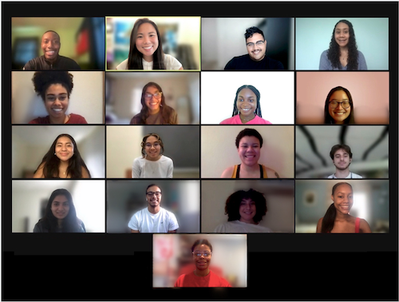
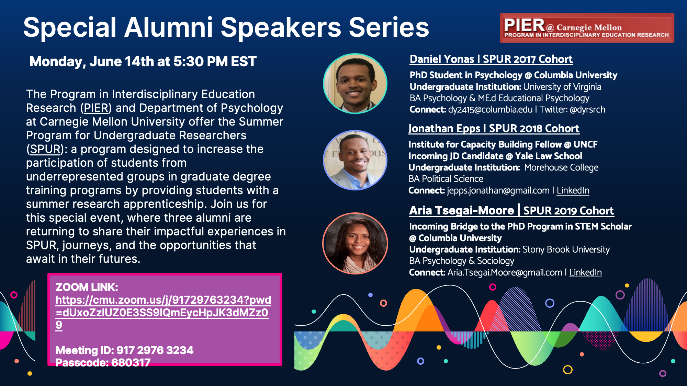
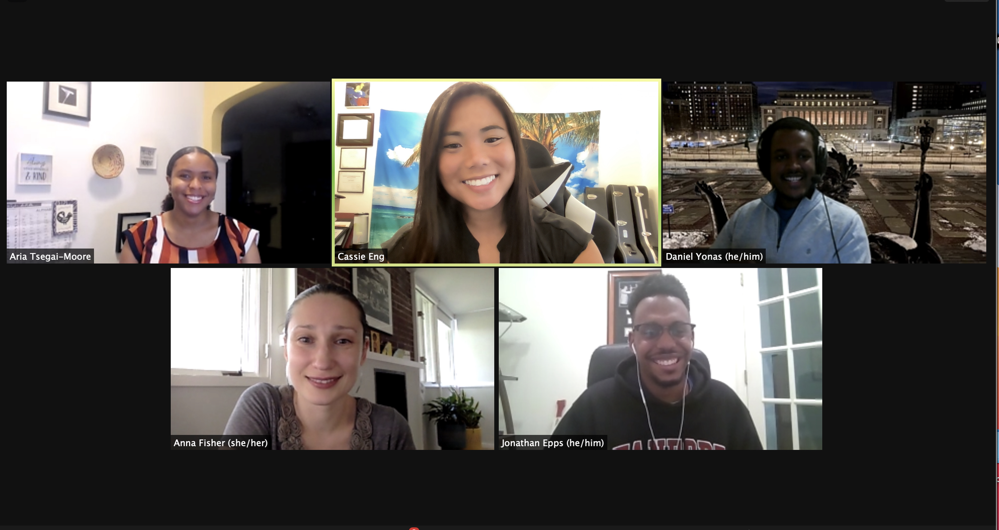
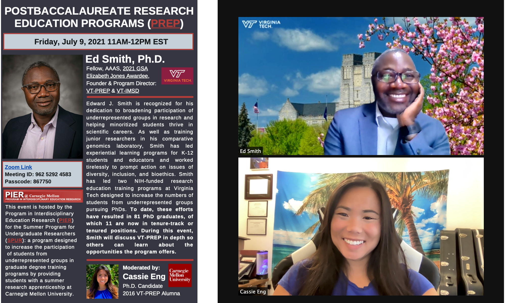
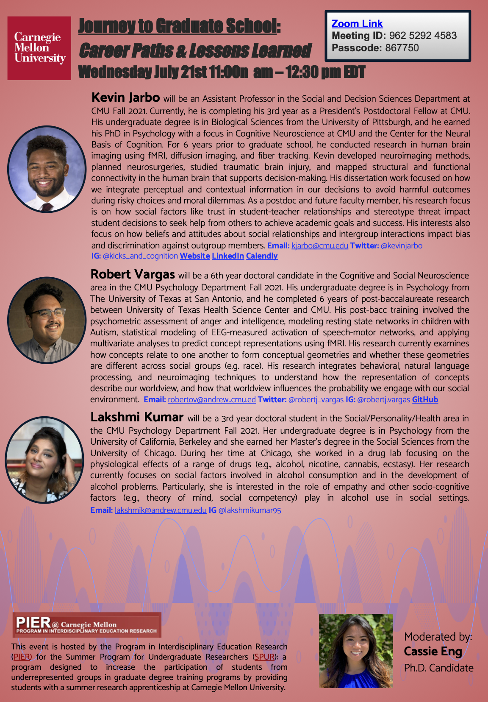
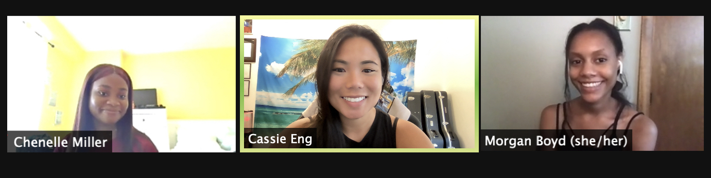
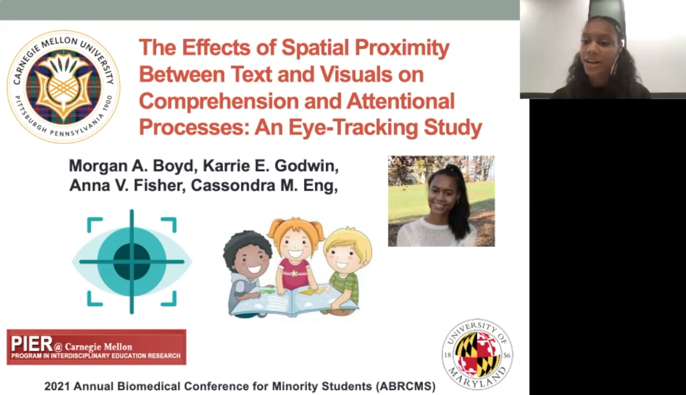
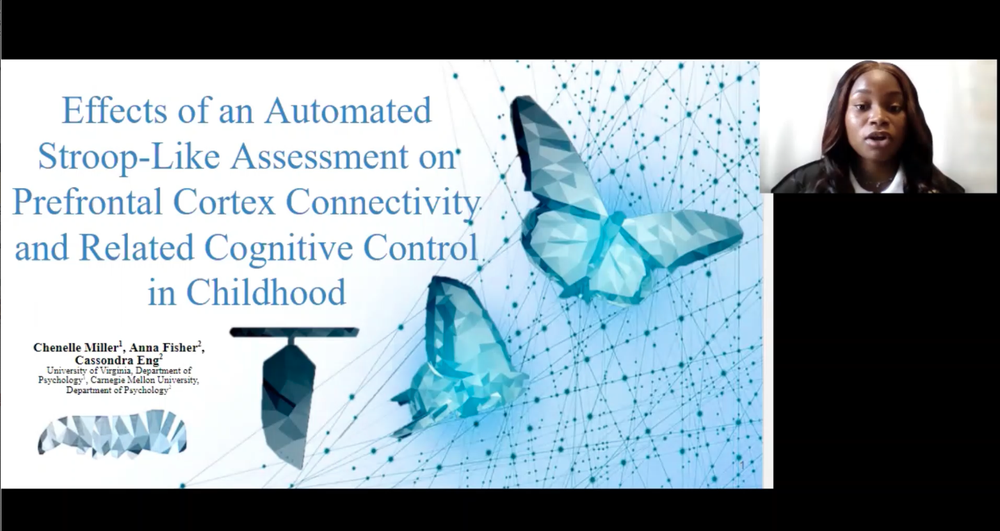

Commitment to Diversity, Equity, & Inclusion

My commitment to DEI initiatives is reflected in my involvement in Carnegie Mellon University’s Research Experiences for Undergraduates (REU) Program, now known as the Summer Program for Undergraduate Researchers (SPUR). The program was founded by my faculty advisor, Dr. Anna Fisher funded by PIER to encourage underrepresented students to pursue research careers through exposure to innovative research, experimental and statistical methods, and professional development skills that are essential to succeed in academia. In 2018-2021, I served as an REU mentor, where I advised underrepresented, first-generation college, and economically disadvantaged visiting undergraduate students by supervising summer research apprenticeships.
In 2021, because the program was virtual, I took on the role of the REU Program Leadership Director & Special Events Coordinator with my my colleague Robert Vargas (see below) where we facilitated weekly community building leadership workshops to foster a sense of belonging among students. I organized 3 symposium for the program:
 
Chair: Eng, C. (2021). Special Alumni Speaker Series. The Program in Interdisciplinary Education Research (PIER) Carnegie Mellon University Summer Program for Undergraduate Researchers. Invited Speakers: Yonas, D., Columbia University; Epps, J., Yale University; Tsegai-Moore, A., Stony Brook University.

Chair: Eng, C. (2021).Applying to Postbaccalaureate Programs. The Program in Interdisciplinary Education Research (PIER) Carnegie Mellon University Summer Program for Undergraduate Researchers. Invited Speaker: Smith, E., Founder and Program Director of VT-PREP and VT-IMSD, Virginia Polytechnic Institute and State University.

Chair: Eng, C. (2021). Journey to Graduate School: Career Paths and Lessons Learned. The Program in Interdisciplinary Education Research (PIER) Summer Program for Undergraduate Researchers. Invited Speakers: Jarbo, K., Social and Decision Sciences Department Assistant Professor; Vargas, R., Psychology Department Doctoral Candidate; Kumar, L., Psychology Department Doctoral Student; Carnegie Mellon University.

In 2021, I mentored visiting REU scholars Chenelle Miller, a Psychology major with a Minor in African American Studies from University of Virginia, and Morgan Boyd, a Dual Major in Psychology and Cognitive Neuroscience. At the end of the summer research program, Morgan and Chenelle presented the remarkable findings of their independent summer projects to graduate students, post-doctoral researchers, and faculty members in several CMU departments, had 5 abstracts accepted to present at professional research conferences, and were both awarded presentation awards.

Morgan presented her work at three professional research conferences: Carnegie Mellon’s Eberly Center for Teaching Excellence and Educational Innovation’s Teaching and Learning Summit, The International Society for Developmental Psychobiology Meeting, and The Annual Biomedical Research Conference for Minority Students.

Chenelle presented her work at two professional research conferences: The Annual Biomedical Research Conference for Minority Students and The International Society for Developmental Psychobiology Meeting.

In 2019, I mentored visiting REU scholar Aria Tsegai-Moore, an undergraduate Psychology major from Stony Brook University. She was awarded the Top Presentation Award when she presented the findings from our summer project together at her first conference, ABRCMS, in California. Aria is also first-author on a publication we submitted together, The Construct and Criterion Validity of a Cognitive Game-based Assessment: Cognitive Control, Academic Achievement, and Prefrontal Cortex Connectivity in the proceedings of the 43rd Cognitive Science Society Conference, Vienna, Austria. She was accepted into Columbia University's Bridge to the Ph.D. Program in STEM.